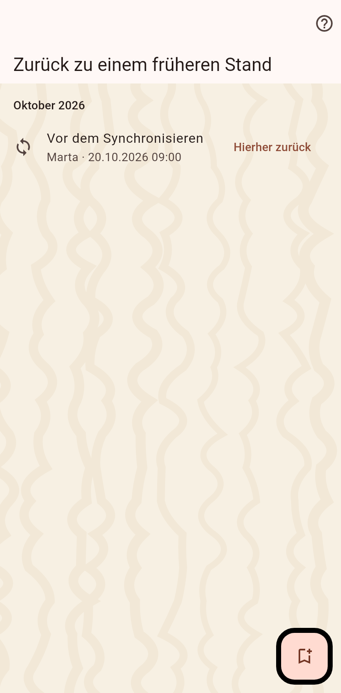

Die Momente, in denen sich dieser Katalog stark verändert hat: vor jedem Import und Abgleich, vor einem Zusammenführen, einem Archivieren oder einem Löschen, und immer dann, wenn du selbst einen markiert hast.

Wählst du einen Moment, kehrt der Katalog dorthin zurück: alles danach wird in eine Datei geschrieben, die du behältst, und dann entfernt; jeder neuere Moment geht mit. Wer schon abgeglichen hat, behält, was er bekommen hat; der nächste Abgleich bringt es zurück, was ein falscher Import verdient und ein falsches Zusammenführen nicht.
Der Knopf auf dieser Seite markiert einen Moment mit eigenem Namen, vor einer Änderung, bei der du dir nicht sicher bist.